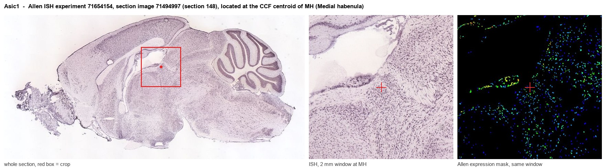
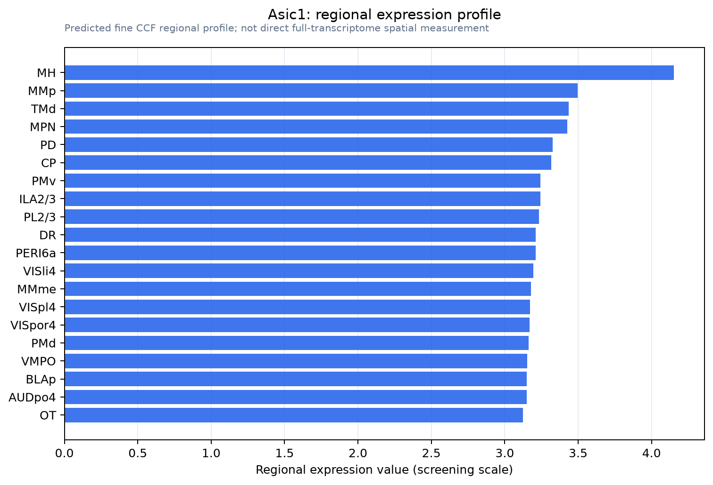

Asic1
Acid-sensing ion channel 1 (ASIC1) (Acid-sensing ion channel) (Amiloride-sensitive cation channel 2, neuronal) (Brain sodium channel 2)
Spatial tier: REGION_BIASED · Class: ION_CHANNEL · Top region: MH (Medial habenula) · Positive regions: 44/554
41.4Discovery Score
38.9Targetability Score
CEvidence grade C
What this means: Asic1: fine CCF profile is region-biased toward MH (top regions: MH, MMp, TMd, MPN, PD); this is a discovery lead, not direct proof.
Function in MH: evidence, prediction, innovation
- Gene function
- Asic1 encodes acid-sensing ion channel 1 (ASIC1a/ASIC1b), a proton-gated trimeric cation channel of the ENaC/degenerin family. Extracellular acidification opens it, producing an inward Na+ (and for ASIC1a some Ca2+) current that depolarises neurons; it is the main CNS chemosensor for pH drops caused by CO2 or acidic synaptic vesicle content. Beyond conducting current, ASIC1a physically binds and tonically inhibits BK (Kcnma1) and Kv1.3 channels, an inhibition relieved by acidosis.
- Region function
- The medial habenula is an epithalamic nucleus whose cholinergic (ChAT/Slc17a6) and substance P (Tac1) neurons project almost exclusively through the fasciculus retroflexus to the interpeduncular nucleus. This pathway controls nicotine aversion and withdrawal, anxiety, fear and aversive-memory expression.
- Published in this region
- expression only Santos-Torres et al. 2011 (J Physiol) recorded from mouse MHb neurons and applied the ASIC1a-selective blocker psalmotoxin-1: it did not change nicotine-evoked nAChR currents, whereas the non-selective ASIC/NHE1 blockers amiloride and zoniporide did, by cross-reacting with nAChRs rather than with ASICs. No positive ASIC1a function in MHb has been reported. Allen ISH shows Asic1 present in MH (expression energy 7.2) but below the whole-grey-matter value (10.6), i.e. no MH enrichment.
- Predicted function
- Prediction: ASIC1a should act as the pH/CO2-sensing arm of MHb aversion signalling. MHb neurons fire tonically and sustain long depolarisations near -30 mV, so a proton-gated depolarising conductance plus ASIC1a's tonic clamp on BK channels (Petroff 2008) would set resting excitability and the duration of nicotine-evoked responses. MHb-restricted Asic1 deletion or PcTx1 infusion is predicted to blunt CO2/acidosis-evoked freezing and reduce nicotine-withdrawal aversion, while ASIC1a overexpression should amplify both.
- Innovation
- ★★★★☆ 4/5 The single MHb slice study that exists used ASIC1a pharmacology only as a negative control, so the channel's actual role in the habenulo-interpeduncular pathway is untested.
- Tools
- Asic1a (Accn2) global and floxed knockout mice (Welsh lab); ASIC1a-selective peptide blockers psalmotoxin-1 (PcTx1) and mambalgins; amiloride (non-selective); validated ASIC1 antibodies; cross with MHb drivers ChAT-IRES-Cre (JAX 006410) or Tac1-IRES2-Cre (JAX 021877).
- References
Direct evidence located at the region

Allen ISH experiment 71654154, section image 71494997 (section 148): the section that contains the CCF centroid of Medial habenula according to the Allen image-to-atlas alignment (reference_to_image), with a 2 mm window around that point. Left: whole section, red box = window. Middle: ISH signal. Right: Allen's expression-mask view of the same window. open this image in the Allen viewer
Look it up yourself: Allen Mouse Brain ISH for Asic1Allen reference atlas: MH (structure 483)ABC Atlas MERFISH viewer(in the ABC Atlas choose dataset MERFISH-C57BL6J-638850-CCF, colour cells by gene "Asic1" or by parcellation_substructure "MH")All genes confined to MH + 3-D brain
Direct spatial evidence
MERFISH REGION LOCATOR

Regional expression figure

Predicted WMB × fine-CCF profile; not direct full-transcriptome spatial measurement.
Spatial profile
Evidence and specificity
- Evidence status
- PREDICTED_FINE
- Direct sources
- None; predicted localization only
- Exclusive threshold
- 12 positive regions out of 554
- Spatial specificity
- 0.278
- Top-region fraction
- 0.044
- Filter status
- PASS
Interpretation limits
- Cell-type-to-region projection is imputed expression, not direct spatial measurement.
- Adult reference atlases do not establish stability across age, sex, strain, state, or disease.
- Transcript abundance does not guarantee protein abundance or genetic-tool performance.